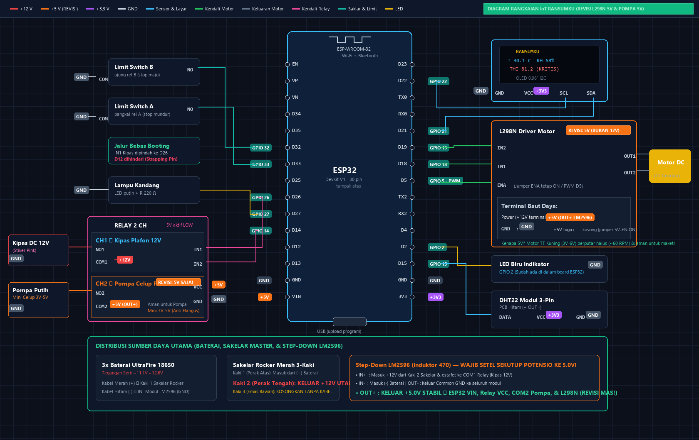

1. L298N: Wajib Diberi 5V (Bukan 12V)
Sesuai koreksi mas Anda: Terminal daya L298N (sekrup kiri) diberi +5.0V dari OUT+ LM2596. Motor TT kuning (3V–6V) berputar halus, tenang (~60 RPM), kuat, dan tidak liar untuk rel stik es krim.
2. Pompa Celup Putih: Wajib 5V (Jangan 12V!)
Pompa fisik Anda adalah Pompa Celup Mini 3V–5V. Terminal COM2 Relay wajib dihubungkan ke +5.0V. Jika mengikuti tulisan "12V" di sketsa lama, dinamo pompa mini Anda akan langsung terbakar.
3. Pin Kipas Dipindah ke D26 (Bebas Strapping)
Penting: Pin D12 adalah *Strapping Pin* ESP32 yang memicu drop voltase Flash 1.8V saat terhubung ke relay sehingga sistem mati/bootloop. Memindahkan ke Pin D26 membuat ESP32 menyala stabil 100%!
